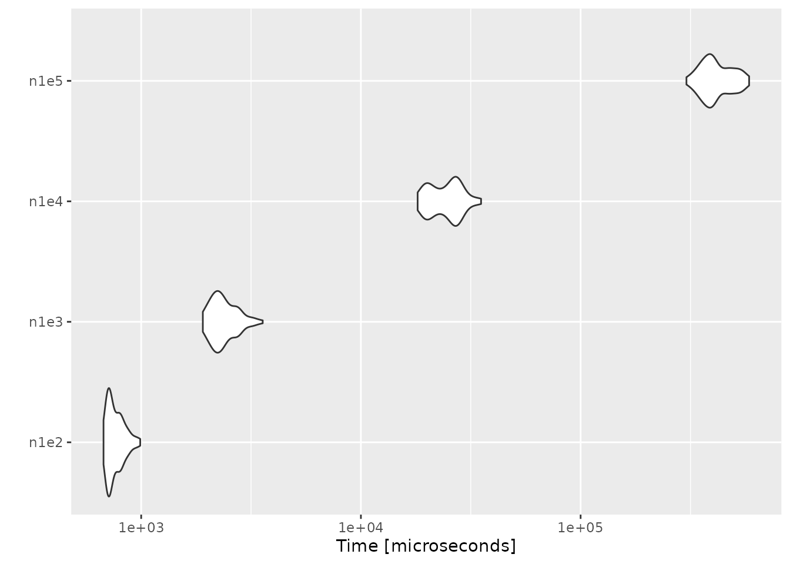
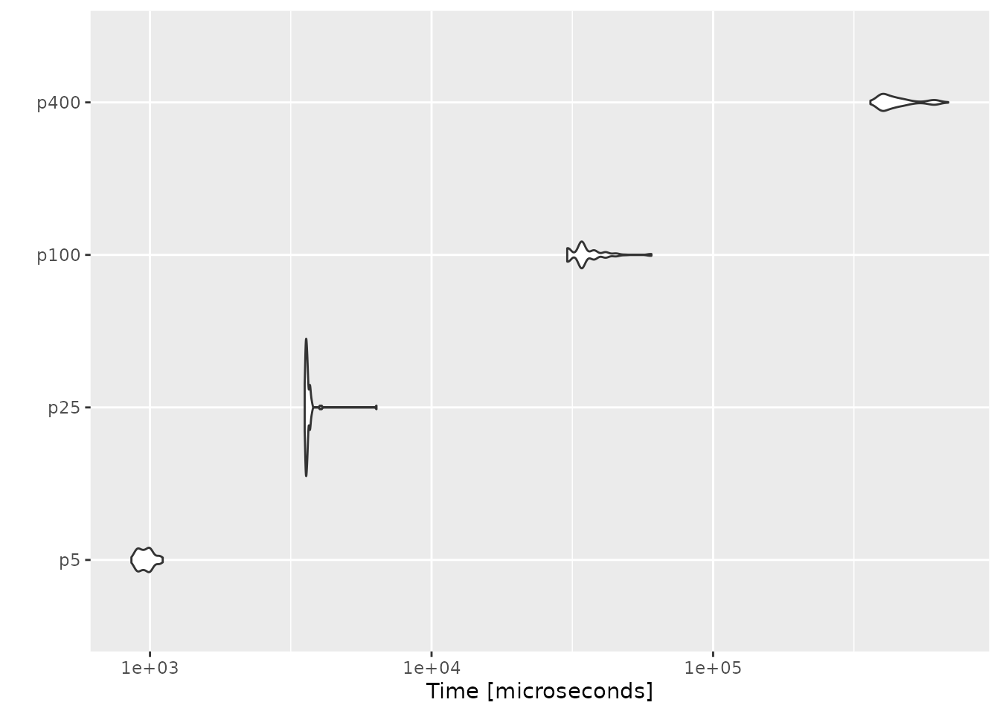

All the tests were done on an Arch Linux x86_64 machine with an Intel(R) Core(TM) i7 CPU (1.90GHz). We first load the necessary packages.
Empirical likelihood computation
We show the performance of computing empirical likelihood with el_mean(). We test the computation speed with simulated data sets in two different settings: 1) the number of observations increases with the number of parameters fixed, and 2) the number of parameters increases with the number of observations fixed.
Increasing the number of observations
We fix the number of parameters at \(p = 10\), and simulate the parameter value and \(n \times p\) matrices using rnorm(). In order to ensure convergence with a large \(n\), we set a large threshold value using el_control().
set.seed(3175775)
p <- 10
par <- rnorm(p, sd = 0.1)
ctrl <- el_control(th = 1e+10)
result <- microbenchmark(
n1e2 = el_mean(matrix(rnorm(100 * p), ncol = p), par = par, control = ctrl),
n1e3 = el_mean(matrix(rnorm(1000 * p), ncol = p), par = par, control = ctrl),
n1e4 = el_mean(matrix(rnorm(10000 * p), ncol = p), par = par, control = ctrl),
n1e5 = el_mean(matrix(rnorm(100000 * p), ncol = p), par = par, control = ctrl)
)Below are the results:
result
#> Unit: microseconds
#> expr min lq mean median uq max neval
#> n1e2 609.6 627.55 675.392 657.20 730.75 795.0 100
#> n1e3 1730.6 1918.45 2075.361 2052.00 2197.20 2634.9 100
#> n1e4 15484.8 16998.65 20306.001 20593.25 22743.15 27065.9 100
#> n1e5 287159.3 347237.15 411177.929 396823.70 472801.80 560537.9 100
autoplot(result)
Increasing the number of parameters
This time we fix the number of observations at \(n = 1000\), and evaluate empirical likelihood at zero vectors of different sizes.
n <- 1000
result2 <- microbenchmark(
p5 = el_mean(matrix(rnorm(n * 5), ncol = 5),
par = rep(0, 5),
control = ctrl
),
p25 = el_mean(matrix(rnorm(n * 25), ncol = 25),
par = rep(0, 25),
control = ctrl
),
p100 = el_mean(matrix(rnorm(n * 100), ncol = 100),
par = rep(0, 100),
control = ctrl
),
p400 = el_mean(matrix(rnorm(n * 400), ncol = 400),
par = rep(0, 400),
control = ctrl
)
)
result2
#> Unit: milliseconds
#> expr min lq mean median uq max neval
#> p5 1.0102 1.05985 1.167324 1.11785 1.19915 4.6517 100
#> p25 3.9444 4.03735 4.123643 4.10015 4.22120 4.5665 100
#> p100 31.3293 34.65685 36.558558 34.85365 38.26600 58.1119 100
#> p400 368.7883 402.96430 452.029854 433.96630 467.80915 667.5478 100
autoplot(result2) On average, evaluating empirical likelihood with a 100000×10 or 1000×400 matrix at a parameter value satisfying the convex hull constraint takes less than a second.